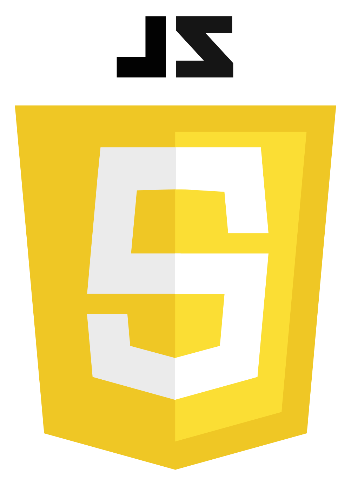
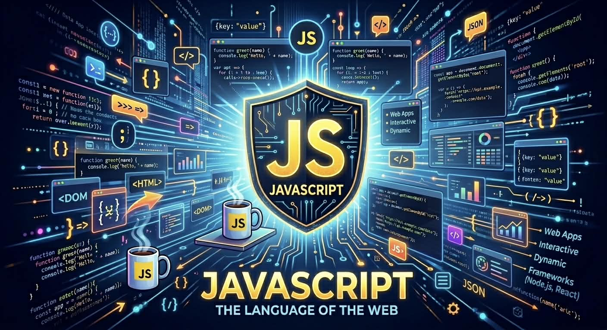
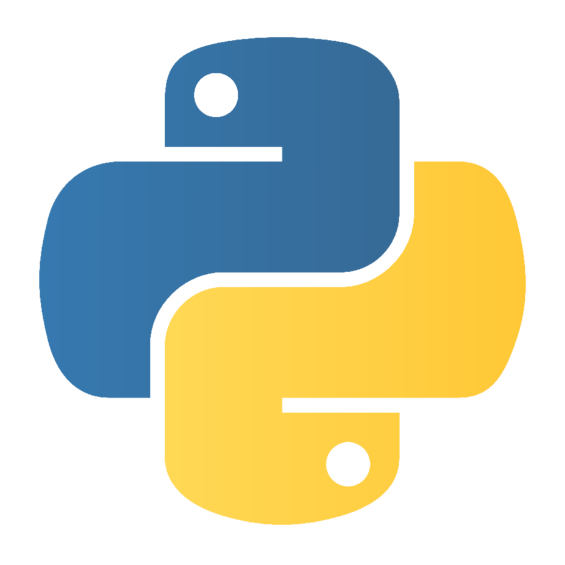
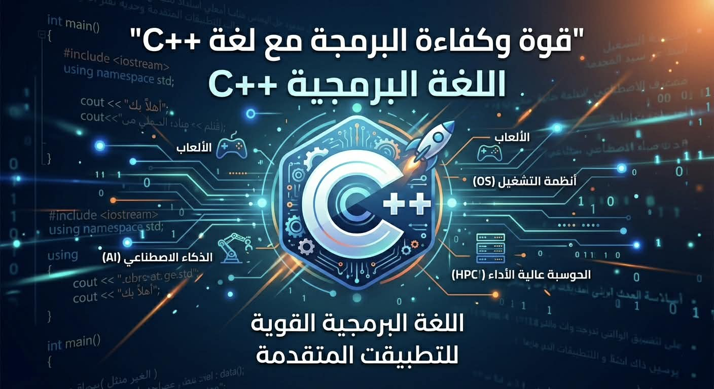
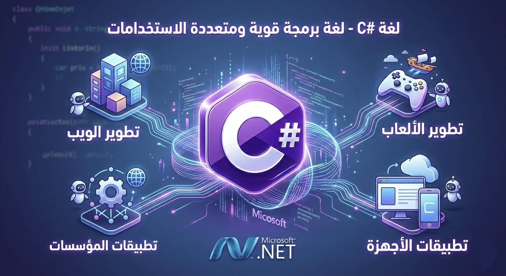
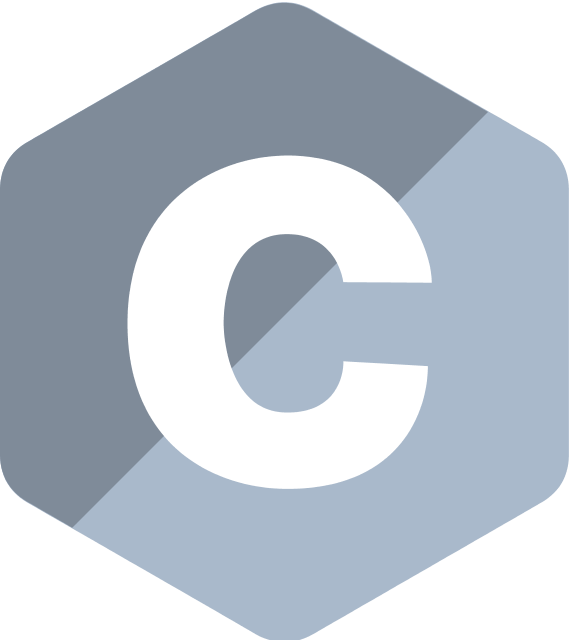
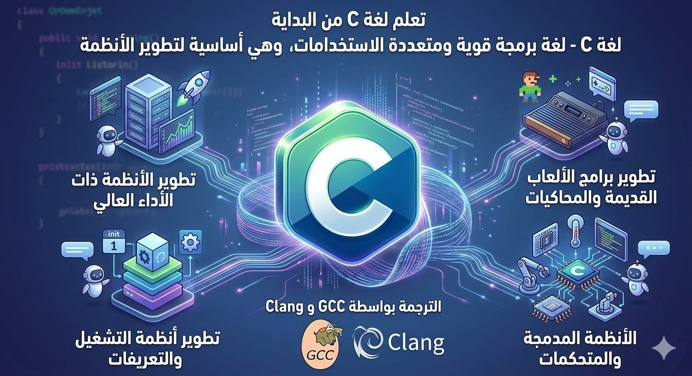
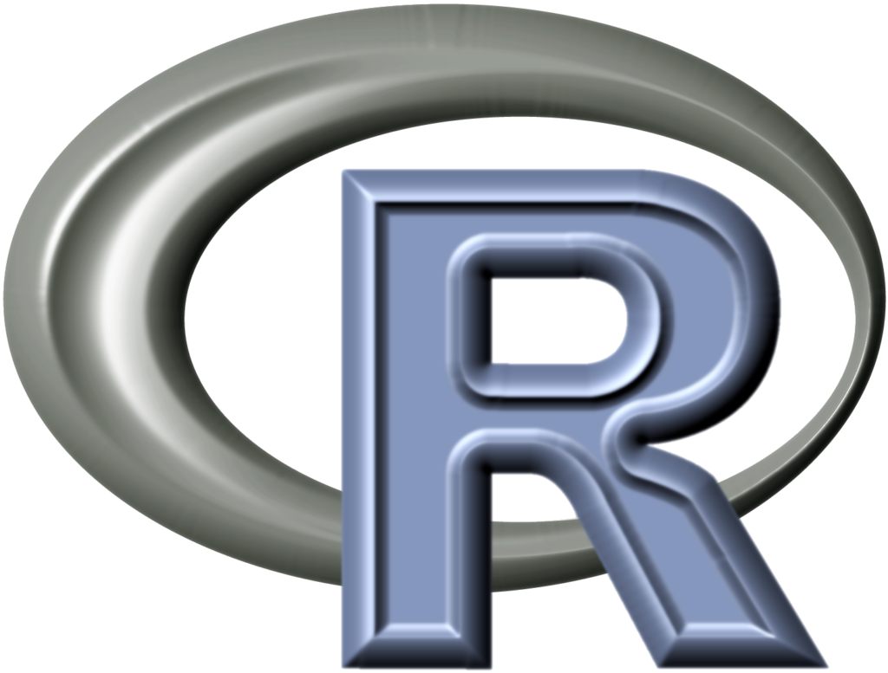
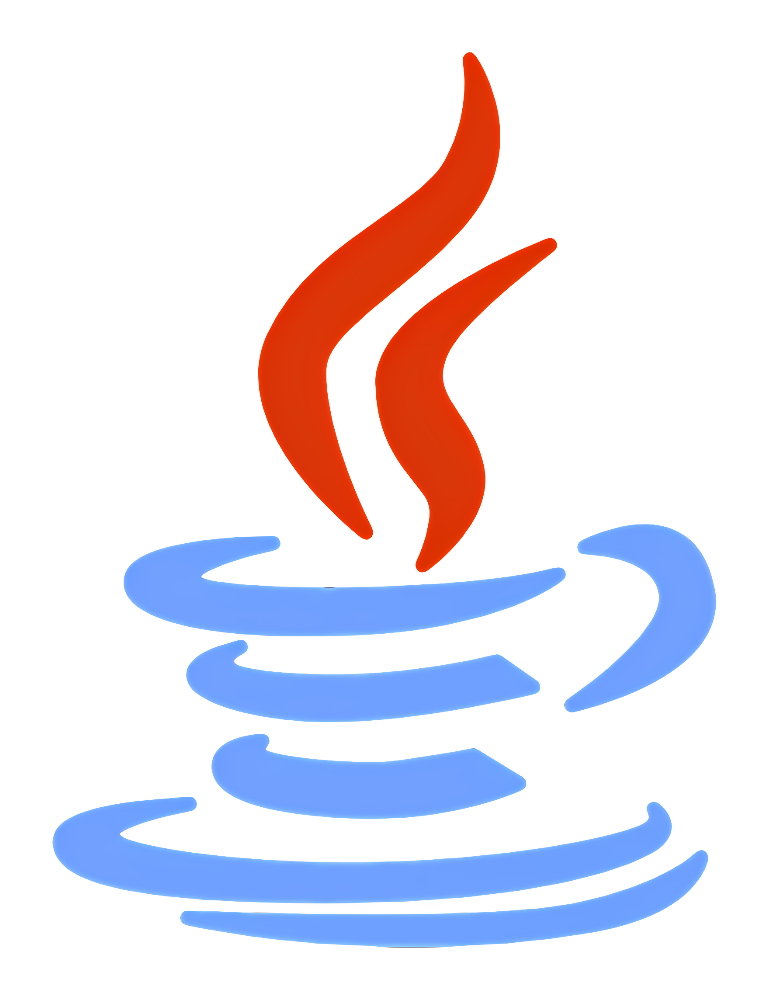
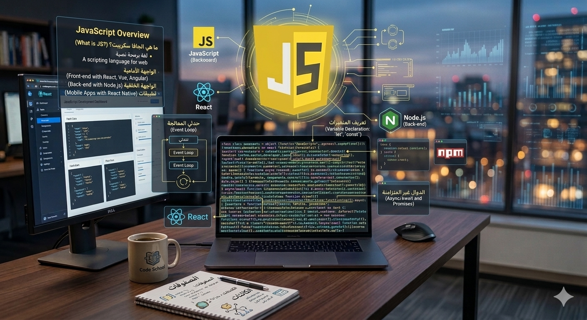

1. الهيكل الذكي (HTML)
▼
1. الهيكل الذكي (HTML)
▼
اللغة التي تحدد محتوى الصفحة. في عصر الـ AI، تعتبر هيكلة البيانات الجيدة أمرًا حيويًا لتفهم المحركات الذكية محتوى موقعك.
- تاريخ التأسيس: تم تطويرها بواسطة تيم بيرنرز لي في عام 1991.
- الإصدار الحالي: HTML5 هو المعيار الحالي والأكثر استخداماً حالياً.
- آلية العمل: تتكون من "وسوم" (Tags) تُكتب بين أقواس زاوية <> وتكون عادةً مزدوجه وسم بدايه tag ووسم إغلاق /tag.
- <> لهيكل الأساسي للمستند: !DOCTYPE html : تعريف إصدار HTML5. html : وسم الجذر. head : يحتوي على معلومات وصفية (عنوان الصفحة، ترميز النص). body : يحتوي على المحتوى الظاهر للمستخدم. <> لهيكل الأساسي للمستند: !DOCTYPE html : تعريف إصدار HTML5. html : وسم الجذر. head : يحتوي على معلومات وصفية (عنوان الصفحة، ترميز النص). body : يحتوي على المحتوى الظاهر للمستخدم.
- السمات (Attributes): توفر معلومات إضافية للعناصر، مثل ssimg src="image.jpg".
- بناء النصوص والروابط والقوائم.
- دمج الوسائط (صور وفيديو).
- استخدام علامات (Semantic HTML) لتحسين SEO.
- و اي امر يكتب في الهيكل الاساسي في صفحه لغه Html يكتب في <>
.jpeg)
.jpeg)
 2. التصميم المتجاوب (CSS)
▼
2. التصميم المتجاوب (CSS)
▼
تمنح الموقع مظهره. يمكنك استخدام أدوات التصميم الحديثة لبناء واجهات تحاكي تصميمات الذكاء الاصطناعي المعقدة بنعومة.
- تحديد الألوان والخطوط العصرية.
- إنشاء شبكات مرنة (Grid & Flexbox).
- إضافة تأثيرات التضبيب والشفافية الرائعة.
- طرق إدراج CSS: خارجي (External): ملف .css منفصل (الأفضل). داخلي (Internal): داخل وسم style في رأس الصفحة. مباشر (Inline): داخل وسم HTML باستخدام خاصية style.
- مكونات قاعدة CSS: تتكون من محدد (Selector) لاستهداف عنصر HTML، وخصائص (Property) وقيم (Value) للتنسيق [مثال: `h1 {color: blue;`] https://www.ar-wp.com/css/}.
- التطور: بدأت عام 1996 وتطورت لتصل إلى CSS3 و CSS4، التي تدعم حركات (Animations)، تدرجات لونية، وتخطيطات متقدمة مثل Flexbox و Grid.
.jpeg)
.jpeg)

3. منطق التفاعل والـ AI (JavaScript) ▼لغة البرمجة التي تجعل الموقع حياً. هي الجسر الذي يربط موقعك بنماذج الذكاء الاصطناعي القوية (مثل ChatGPT API).
- الاستخدام الأساسي: تُعد الثالثة في الثلاثي الأساسي للويب مع HTML (للهيكلة) وCSS (للتصميم)، حيث تتولى JavaScript جانب التفاعل.
- التحكم في عناصر الصفحة ديناميكياً.
- غة تعمل في المتصفح: يتم تنفيذ أكوادها مباشرة داخل متصفح المستخدم (مثل Chrome، Firefox) دون الحاجة لترجمة مسبقة.
- استخدامات متعددة: لا تقتصر على المتصفح، بل تُستخدم في تطوير تطبيقات الموبايل، تطبيقات سطح المكتب، والألعاب، وحتى إنترنت الأشياء (IoT) باستخدام Node.js.
- المميزات الرئيسية: لغة مفسرة (Interpreted): يتم قراءة الكود وتنفيذه مباشرة. متعددة النماذج (Multi-paradigm): تدعم البرمجة الكائنية (OOP) والبرمجة الوظيفية. ديناميكية (Dynamically Typed): لا تتطلب تحديد نوع المتغيرات مسبقًا. الفرق بينها وبين Java: لغتان مختلفتان تمامًا. جافا سكريبت خفيفة ومرتبطة بالويب، بينما جافا لغة أكثر تعقيدًا وتعتمد على بيئة تشغيل آلة جافا الافتراضية (JVM). أشهر أطر العمل (Frameworks): مثل React، Angular، وVue لتطوير واجهات المستخدم، وNode.js للخلفية.
- الاتصال بالخوادم وجلب البيانات (APIs).
- تشغيل نماذج الـ AI البسيطة مباشرة في المتصفح.


4. لغه python ▼بايثون (Python) هي لغة برمجة عالية المستوى، سهلة التعلم، ومفتوحة المصدر، تتميز ببساطة صياغتها (Syntax) وتشبه اللغة الإنجليزية، مما يجعلها مثالية للمبتدئين والمحترفين. تُستخدم في الذكاء الاصطناعي، علم البيانات، وتطوير الويب، وتدعم أنماط البرمجة الكائنية والإجرائية.
- اللغة: مفسّرة (Interpreted) وديناميكية الكتابة (Dynamically Typed)، لا تحتاج لتعريف أنواع المتغيرات مسبقًا.
- النشأة: ابتكرها Guido van Rossum وأصدرت لأول مرة عام 1991.
- المميزات: سهولة القراءة: تستخدم المسافات البادئة (Indentation) لتنظيم الكود بدلاً من الأقواس. تعدد الاستخدامات: لغة عامة الأغراض (General-purpose) تستخدم في الويب، الأتمتة، والتحليل. مكتبات ضخمة: توفر مكتبات قوية مثل Django للويب، و Pandas/TensorFlow للبيانات. المنصات: تعمل على مختلف أنظمة التشغيل (Windows, Mac, Linux).
- الاستخدامات الرئيسية: الذكاء الاصطناعي والتعلم الآلي (AI & ML): الأكثر شهرة في هذا المجال. علم البيانات والتحليل (Data Science): تستخدم بكثافة في التحليل المالي والبيانات الضخمة. تطوير الويب (Backend): باستخدام إطارات مثل Django و Flask. أتمتة المهام (Scripting): كتابة سكربتات لتنفيذ مهام متكررة.
- إدارة الذاكرة: تلقائية (Garbage Collection)، مما يسهل التعامل مع الذاكرة.
 5. ++C
▼
5. ++C
▼
- المميزات الرئيسية: الأداء العالي: تعتبر من أسرع لغات البرمجة. إدارة الذاكرة: تمنح المبرمج تحكماً كاملاً في الذاكرة. البرمجة كائنية التوجه (OOP): تدعم الـ Classes، الوراثة، والتغليف مما يجعل الأكواد منظمة وقابلة لإعادة الاستخدام. المحمولية: تعمل على منصات مختلفة مثل Windows، Mac، و Unix.
- تطبيقات استخدامها: تطوير الألعاب: تستخدم في محركات الألعاب الكبيرة. أنظمة التشغيل: مثل أجزاء من نظام ويندوز. التطبيقات عالية الأداء: مثل برامج التصميم، المتصفحات، وتطبيقات الموبايل.
- أساسيات تعلمها: Syntax: طريقة كتابة الكود. المتغيرات وأنواع البيانات (Variables & Data Types). الجمل الشرطية والحلقات (If, Loops). الدوال (Functions) والدالة الرئيسية main() التي يبدأ منها تشغيل أي برنامج.
- بيئات التطوير (IDE) المناسبة: Visual Studio. Code::Blocks. CLion.
- وقت التعلم: يحتاج المبتدئ من شهرين إلى ثلاثة أشهر لتعلم الأساسيات بمعدل 10-15 ساعة أسبوعياً.
لغة C++ هي لغة برمجة قوية، عالية المستوى، ومتعددة الأنماط (تدعم الإجرائية والكائنية OOP)، طورها بيارن ستروستروب في 1979. تتميز بسرعتها الفائقة وتحكمها الدقيق في الذاكرة، مما يجعلها مثالية لتطوير الألعاب، أنظمة التشغيل، وتطبيقات سطح المكتب. هي امتداد للغة C، وتعتبر أساساً قوياً لفهم مبادئ البرمجة.

 6. #C
▼
6. #C
▼
- أهم معلومات عن لغة C#: التطوير والمنشأ: طوّرها أندرس هيلسبرغ في مايكروسوفت عام 2000 كجزء من مبادرة .NET. النوع: لغة برمجة كائنية التوجه (Object-Oriented Programming) وقوية التنميط (Type-safe). عائلة اللغات: تنتمي لعائلة لغات C، وتتشابه في بناء الجملة (Syntax) مع Java و C++ و JavaScript. أحدث إصدار: C# 13 تم طرحه في 2024.
- مجالات استخدام C#: تطبيقات سطح المكتب: بناء برامج ويندوز باستخدام WPF أو Windows Forms. مواقع الويب: تطوير مواقع ويب قوية باستخدام إطار ASP.NET. تطوير الألعاب: تعتبر لغة أساسية في تطوير الألعاب باستخدام محرك Unity. تطبيقات الهاتف: تطوير تطبيقات لـ Android و iOS باستخدام Xamarin. أنظمة الشركات: تطبيقات متينة وقابلة للتوسع للمؤسسات الكبيرة والبنوك.
لغة C# (سي شارب) هي لغة برمجة حديثة، قوية، ومتعددة الأنماط (كائنية التوجه - OOP) طورتها مايكروسوفت، وتعمل ضمن إطار عمل .NET. تُستخدم بشكل واسع في تطوير تطبيقات سطح المكتب، مواقع الويب، ألعاب الفيديو (باستخدام محرك Unity)، وتطبيقات الهواتف. تتميز بسهولة التعلم مقارنة بـ ++C وبكفاءة عالية، وهي مدعومة بقوة لتطوير أنظمة الشركات والبنوك.


7. C ▼- أبرز مميزات واستخدامات لغة C: الأداء والسرعة: لغة منخفضة المستوى توفر وصولاً مباشرًا للذاكرة وعتاد الحاسوب. تعدد الاستخدامات: تُستخدم في برمجة أنظمة التشغيل (مثل Linux)، التعريفات (Drivers)، الأنظمة المدمجة (Embedded Systems)، و{تطوير الألعاب والذكاء الاصطناعي}. أساس البرمجة: تعتبر مدخلاً أساسياً لفهم كيفية عمل الحاسوب وإدارة الذاكرة عبر المؤشرات (Pointers). البساطة: لغة صغيرة تحتوي على 32 كلمة مفتاحية فقط، مما يجعلها سهلة الفهم للبدء.
- مفاهيم أساسية في لغة C: الهيكلية: تعتمد على الدوال (Functions) والبرمجة الإجرائية. أنواع البيانات: تشمل الأساسيات مثل (int, float, char) والهياكل (Structs). التحكم: جمل الشرط (if, switch) وحلقات التكرار (for, while). المؤشرات (Pointers): أدوات قوية للتعامل مباشرة مع عناوين الذاكرة.
لغة C هي لغة برمجة قوية، هيكلية، وعالية الأداء، طوّرها دينيس ريتشي في أوائل السبعينيات لتطوير نظام يونكس. تتميز بكونها قريبة من لغة الآلة، سريعة، ومحمولة، مما يجعلها مثالية لأنظمة التشغيل، التطبيقات المدمجة، وبرامج التحكم بالعتاد. تعتبر "اللغة الأم" للكثير من اللغات الحديثة مثل C++ وPython.

- النشأة: تم تطويرها بواسطة روبرت غريسيمر، روب بايك، وكِن ثومبسون في Google.
- المميزات الرئيسية: بساطة التركيب: syntax بسيط وسهل القراءة. التزامن (Concurrency): تمتلك Goroutines، وهي خيوط معالجة خفيفة جداً تتيح التعامل مع آلاف العمليات في وقت واحد بكفاءة. سرعة الأداء: لغة مجمعة (Compiled) تعطي أداءً سريعاً يقارب لغة C++. مكتبة قياسية قوية: تحتوي على مكتبة قياسية غنية تدعم العمليات الشبكية بشكل ممتاز. أمان الذاكرة: إدارة تلقائية للذاكرة (Garbage Collection).
- الاستخدامات الشائعة: تطوير الخدمات الخلفية (Backend Services) والخدمات المصغرة. أنظمة البنية التحتية السحابية (مثل Docker و Kubernetes). تطبيقات الشبكات والأنظمة الموزعة.
- العيوب/القيود: لا تعتبر لغة كائنية التوجه بالمعنى التقليدي (لا يوجد وراثة). لا توجد معالجة استثناءات (Exception Handling) تقليدية، بل تعتمد على إرجاع الأخطاء. العموميات (Generics) تمت إضافتها مؤخراً (حديثة العهد في اللغة).
- العيوب/القيود: لا تعتبر لغة كائنية التوجه بالمعنى التقليدي (لا يوجد وراثة). لا توجد معالجة استثناءات (Exception Handling) تقليدية، بل تعتمد على إرجاع الأخطاء. العموميات (Generics) تمت إضافتها مؤخراً (حديثة العهد في اللغة).
لغة جو (Go أو Golang) هي لغة برمجة مفتوحة المصدر طورتها Google في 2009 لتكون بسيطة، سريعة، وفعالة. تتميز بكفاءة عالية في التعامل مع التزامن (Concurrency)، وتستخدم بكثرة في تطوير تطبيقات السحابة (Cloud)، الخدمات المصغرة (Microservices)، وأنظمة الخوادم الخلفية. هي لغة مجمعة (Compiled) وتدعم تعدد المنصات.

9. Run ▼- أهم النقاط حول google.script.run: الوظيفة: تتيح تفاعل كود HTML/JavaScript في جانب العميل مع خوادم Google (مثل تعديل مستندات، جداول بيانات، أو نماذج Google). النوع: واجهة برمجة تطبيقات غير متزامنة (Asynchronous)، مما يعني أنها لا تعطل واجهة المستخدم أثناء تنفيذ أوامر الخادم. الاستخدام: تُستخدم داخل ملفات HTML الخاصة بـ Apps Script للتواصل مع ملفات .gs.
- هناك أيضاً نافذة "Run" في ويندوز (Windows + R)، وهي أداة نظام لتشغيل البرامج والأوامر مباشرة، ولا تعتبر لغة برمجة.
بناءً على نتائج البحث، لا توجد لغة برمجة شهيرة أو معتمدة تسمى "Run" بشكل مستقل، ولكن المقصود غالباً هو google.script.run، وهي واجهة برمجة تطبيقات (API) غير متزامنة من جهة العميل (Client-side) تُستخدم في تطبيقات Google Apps Script لاستدعاء وظائف الخادم (Server-side) من صفحات HTML (مثل المربعات الحوارية أو الأشرطة الجانبية)

10. Java ▼- متعددة المنصات (Platform Independent): تعمل برامج جافا على أي نظام تشغيل (ويندوز، ماك، لينكس) طالما توفرت بيئة تشغيل جافا (JVM).v
- موجهة للكائنات (OOP): تعتمد على فكرة الـ Classes و Objects، مما يجعل الكود منظماً، قابلاً لإعادة الاستخدام، وسهل الصيانة.
- سهلة التعلم وآمنة: تم تصميمها لتكون بسيطة للمبتدئين وتوفر مستويات أمان عالية في التعامل مع الذاكرة والشبكات.
- استخدامات واسعة: تُستخدم في تطبيقات الهاتف (Android)، تطبيقات الويب (Backend)، الأنظمة البنكية، والبيانات الضخمة (Big Data).
- أدوات التطوير (IDEs): تعتمد على برامج مثل NetBeans، Eclipse، و IntelliJ IDEA لكتابة وتطوير الكود.
- الفرق بينها وبين JavaScript: رغم التشابه في الاسم، جافا هي لغة برمجة مستقلة وتختلف تماماً عن JavaScript المستخدمة في تطوير صفحات الويب التفاعلية.
- تُعد جافا خياراً ممتازاً لبناء أنظمة كبيرة وقوية، وتحظى بمجتمع مطورين ضخم يوفر مكتبات وأدوات واسعة.
جافا (Java) هي لغة برمجة عالية المستوى، موجهة للكائنات (Object-Oriented)، وتتميز بأنها آمنة، سريعة، ومستقلة عن نظام التشغيل (تكتب مرة واحدة وتعمل في أي مكان بفضل JVM). طورتها شركة Sun Microsystems عام 1995، وتملكها حالياً شركة Oracle، وتستخدم على نطاق واسع في تطبيقات الأندرويد، البرمجيات المؤسسية، والويب.
Used Images
.jpeg)
.jpeg)

.jpeg)
.jpeg)